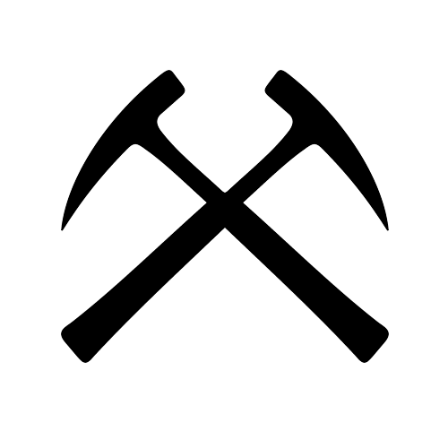

Synergizer Process
| Strategic Thinking and Planning | Talent Optimization | Performance Optimization |
 Engaging in strategic thinking and putting the market context, resources, structure, processes, products and services, stakeholders, clients, and your human capital in strategic perspective allows for advantages and value adding opportunities that go far beyond traditional planning approaches. Strategic planning has been an excellent tool, which has been used by all sectors, private, public, and non-profit, (at varying levels) to enhance their ability to better manage for results and adding value. |
 Simply put, if you take an organization with excellent non-human resources, technology, finances and strategy and put inept people in charge, they will sooner or later place the organization in a downward spiral. However, if you take an organization with inadequate resources, technology, finances and strategy and put excellent and capable people in charge, they will soon turn the organization around and put it on an upward spiral. Acquiring the right talent, and their appropriate placement, therefore, is key to talent optimization. |
 A well informed, empowered, and incentivized team that is aligned with the strategy and goals of an organization cannot by itself optimize performance unless it is lead by capable and equally informed and passioned leadership. It is well documented in multiple related research findings that leadership's impact on a group is far greater and impactful than is recongnized by most. Developing and optimizing leadership is essential to piloting the journey towards creating value and achieving excellence. |
|---|
| Strategy/Resources Alignment | Incentivization/Commitment | Measurement |
Having gained the desired strategic perspective, you and your organization are now in an advantaged position to align your selected strategy with your organizational resources. Strategic plans are far less value adding, and in fact often disruptive, if a strategic alignment of the plan is not undertaken with the strategic and tactical implementation and with the plan and assignment and utilization of the critical and relevant resources to the organization. |
Great talent, well informed and well placed, has no reason to be committed to the organization strategy or its goals for success even if it feels aligned with the goals unless the goal attainment is incentivized for mutual value. Incentivization is critical to gaining commitment and mobilizing the value laden human capital towards performance optimization. |
 Performance measurement and evaluation is critical to determining whether you are on the right track; in line with your strategy, and responsive to your stakeholders. Once the knowledge that nothing stays constant is added to this need, it is then absolutely critical to set targeted parameters and conduct sustained and relevant measurements to stay on the path to value creation. |
|---|
| Stakeholder Buy-In | Empowerment | Strategic Realignment |
 Creating a value adding strategic plan and its alignment with the resources of the organization will not optimize performance or value unless you create stakeholder "buy-in" for the success of the plan and its strategic alignment. The real buy-in can only take place when the team is asked for input, feels listened and has an impact on the decisions. A value adding team needs to be well informed and educated not only on the elements of organizational strategy, but on all matters relevant and critical to them. |
Acquiring and retaining great talent, well informed and committed, is a key step to performance optimization. However, unless your talented team is empowered to contribute and optimally use their talent, capacities, and capabilities they cannot create the desired value and live up to your or their own performance expectations. Lack of empowerment for an optimized talented team will inevitably lead to complacency and mental or actual separation. |
 Organizations that excel in delivering the highest value also develop the flexibility within their systems and organization to realign as needed. Creating the highest value requires the flexibility with allocation of resources as well as the structure and processes of the organization, and its talent utilization to achieve excellence. |
|---|